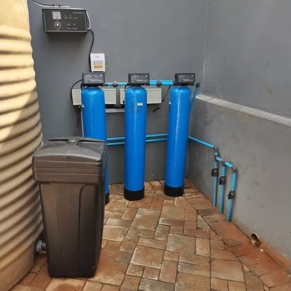
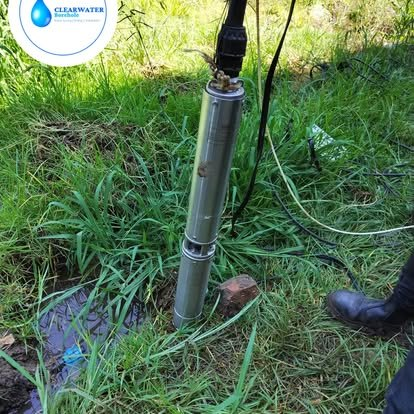
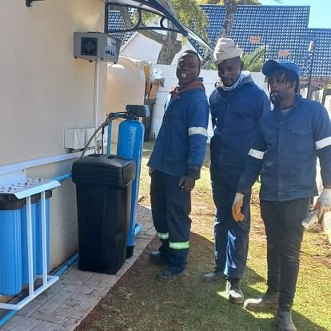
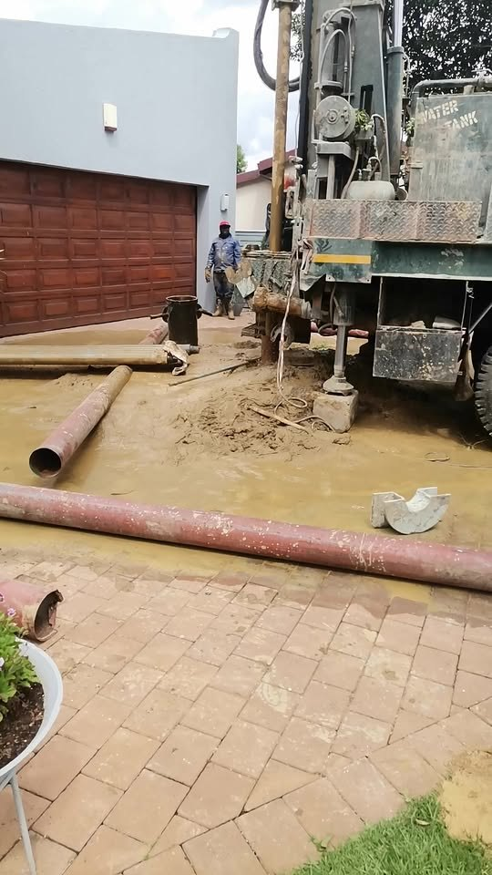
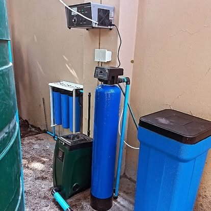
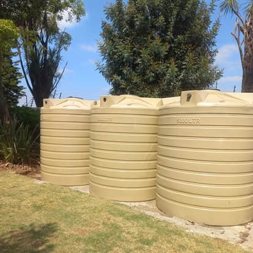
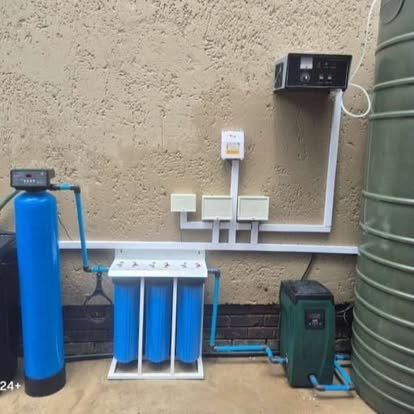
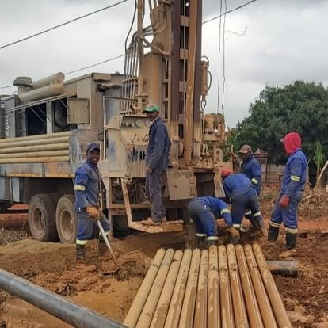
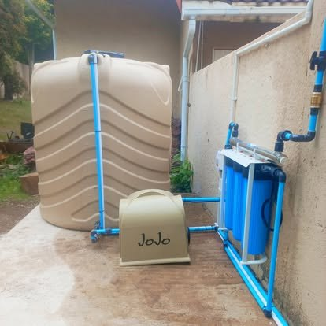

Your own water supply, without the municipal outages or the rising bills. We survey, drill and install the pump, tank and filtration. One team, one all-inclusive price.
No guessing what a borehole costs. These are our standard packages. If your property needs something different, we quote it before any work starts.
Know where the water is before you drill.
From survey to filtered water in the house.
Taps keep running when the mains goes off.
Call or WhatsApp us for a quote. We'll tell you what your property needs and what it costs.
Drilled, installed, maintained. One team handles the whole job, so you have one number to call.

Survey, drilling up to 60 m, steel casing, pumps, tank and filtration. One price, fully installed.
See details →
A tank, booster pump and filtration that switch over automatically when the municipal water goes off.
See details →
3-stage filters, UV sterilisers, water softeners and ozone generators for clean, soft water.
See details →
Find out where the water is before you drill. On-site survey, analysis and a written report.
See details →
Submersible, booster and VSD pumps supplied, installed, repaired and maintained.
See details →Send us a WhatsApp with a few photos of your property and we'll tell you the options and the price.
Ask us →
We're Clearwater Borehole, based in Northgate, Randburg. We drill boreholes and install water backup, filtration and pump systems for homes, estates, farms and businesses.
We handle the whole job, from the site inspection to clean water at your tap, so your taps keep running during outages. Every install is plumbed neatly in proper pipework with filters and UV. These are our photos, not stock photos.
Real jobs from our crew: boreholes, backup tanks, filtration and softeners.






Once your Google Business Profile is live, your customer reviews show up in this section automatically, along with a "Leave us a review" button. (This box is only here in the preview.)
Call or WhatsApp with your suburb and what you need. Photos of the property help.
We survey the property to find the best spot to drill and give you a fixed quote.
The rig drills your borehole and we case it with steel casing to keep it clean and stable.
We fit the pumps, tank, filtration and UV, test everything, and hand over a working system.
Our base is in Northgate, Randburg. We work across Johannesburg and Gauteng, and take jobs in Mpumalanga, Limpopo and North West.
Check if we cover youOur complete off-grid borehole package starts at R59 000. It includes the geological survey, drilling up to 60 m, 6 m steel casing, submersible and booster pumps, a 2 500 L tank, 3-stage filtration and a UV steriliser, fully installed.
Yes. Our municipal water backup system is R23 500 installed: a 5 000 L tank, booster pump, 3-stage filters and UV steriliser. It switches to tank water automatically when the municipal supply fails.
We recommend it for every borehole, because drilling in the wrong spot is the costliest mistake. It's included in the off-grid package, or R3 500 on its own.
Every system we install has 3-stage filtration and a UV steriliser, which treats the water before it reaches your taps. Where the water is hard we add a softener, and an ozone generator is available for premium water quality.
We're based in Northgate, Randburg and work across Gauteng, plus Mpumalanga, Limpopo and North West. Recent jobs include Northriding, Emmarentia, Bruma and Krugersdorp.
Yes. We repair and maintain existing boreholes and pumps, and add filtration to existing systems.
Call or WhatsApp 063 260 9276 for a quote. We work Gauteng, Mpumalanga, Limpopo and North West.